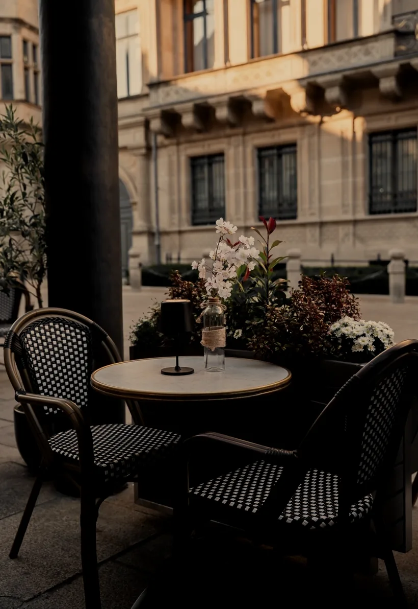
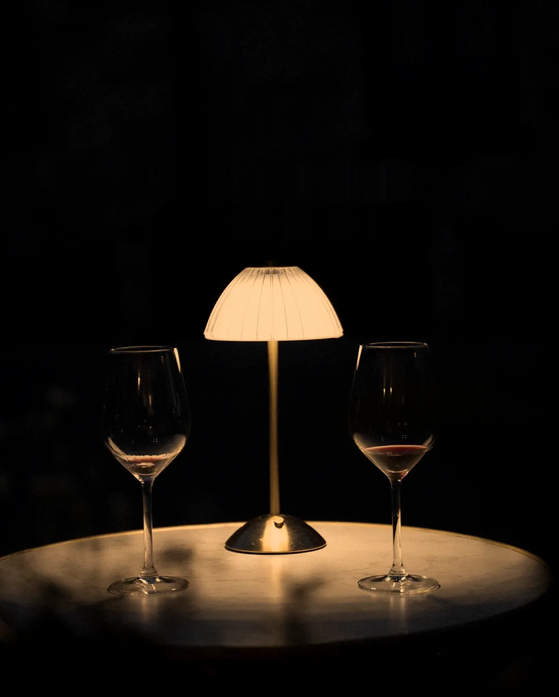

Les soirées au Bistrot de la presse ont quelque chose de magique.
Spécialités luxembourgeoises
- Vegetaresch KniddelenQuenelles de farine à la luxembourgeoise, sauce tomate séchée, rucola et parmesan
- Judd mat GaardebounenCollet de porc fumé, fèves et pommes de terre
- BouneschluppMettwurscht, haricots verts, pommes de terre, lard et oignons
- GromperenkichelscherGalette de pommes de terre
Viande
Et aussi : viande, poissons, pinsa, burgers, salades et desserts faits maison.
Nos vins au verre

Face au Palais grand‑ducal
Un café - restaurant traditionnel qui incarne l'âme du vieux Luxembourg.
Adresse
24, rue du Marché-aux-Herbes
L-1728 Luxembourg
Téléphone
Événements privésMatchs sur la terrasse

Votre table vous attend.
Réserver